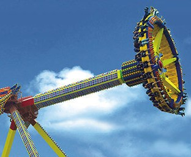
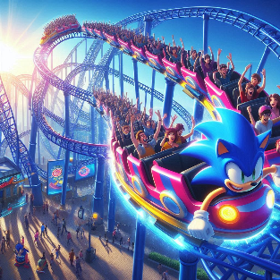
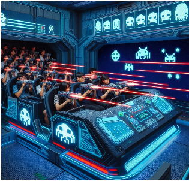

-

Pixel Pendulum: Step aboard and prepare for an epic journey through the digital realm! Swing back and forth on this thrilling ride, feeling the rush of pixelated excitement as you soar through the air. Height requirement: 110 cm. Age requirement: 8 years old and above.
Super Sonic Dash: Feel the rush as you race through loops and corkscrews at supersonic speeds in this roller coaster themed after everyone's favorite blue hedgehog. Height requirement: 110cm. Weight limit: 120kg. Age requirement: 8 years old and above.
Space Invasion: Climb aboard your own space cruiser and gear up for an adrenaline-pumping laser shooting experience! Join forces with fellow recruits as you embark on a mission to defend Earth against waves of pixelated alien invaders. Take aim, fire lasers, and rack up points as you navigate through cosmic battlegrounds in this thrilling cart-based ride. Height requirement: 100 cm. Age requirement: 6 years old and above.